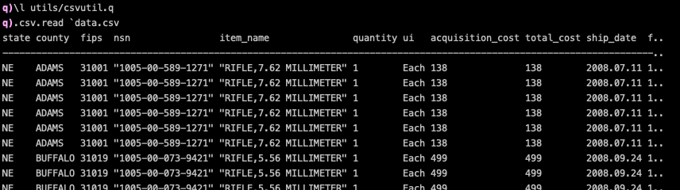
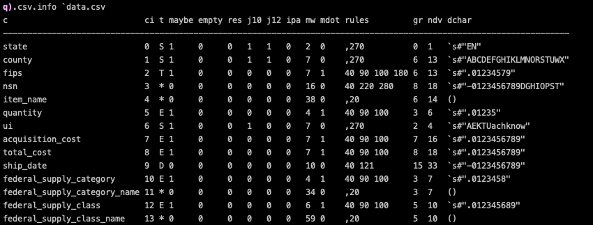
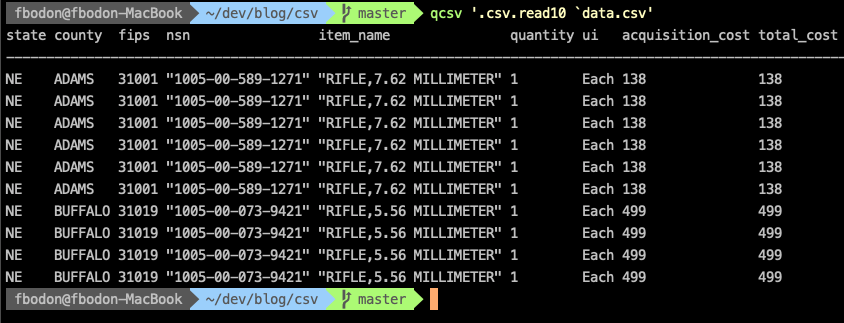
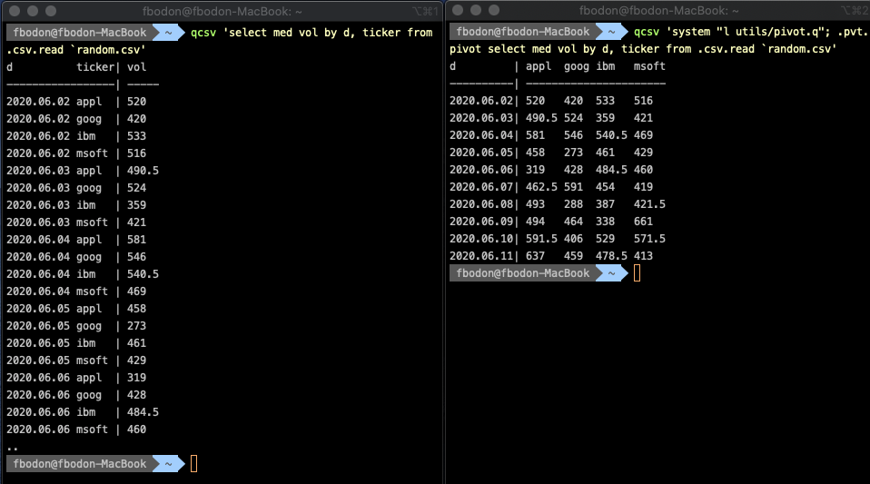
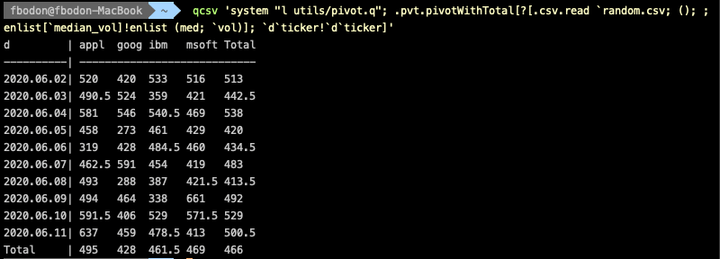
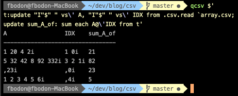
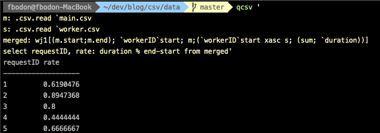

Powerful CSV processing with kdb+
Vector 27:1, online 2020-09-10
From the vector.org.uk WordPress site; not yet reviewed.
Introduction¶
Comma-separated text files (CSV) are the most fundamental format for data processing. All programming languages and software that support working with relational data, also provide some level of CSV handling. You can persist and process data without installing a database management system. Often you don't need a full-blown DBMS with all its features, like handling transactions and concurrent/remote access, indexing, etc… The lightweight CSV format allows for easy processing and sharing of the captured information.
The CSV format predates personal computers and has been one of the most common data exchange formats for almost 50 years. CSV files will remain with us in the future. Working with this format efficiently is a core requirement of a productive developer, data engineer/scientist, DevOps person, etc… You may need to filter rows, sort by a column, select existing or derive new columns. Perhaps you need to do complex analysis that requires aggregation and grouping.
This article provides a glimpse into the available tools to work with CSV files and describes how kdb+ and its query language q raise CSV processing to a new level of performance and simplicity.
Common CSV tools¶
Linux command-line tools¶
Many CSV processing need to be done in a Linux or Mac environment that has a powerful terminal console with some kind of shells on it. Most shells, like Bash, support arrays. You can read a CSV line-by-line and store all fields in an array variable. You can use built-in string manipulation and integer calculations (even float calculations with e.g bc -l) to operate on cell values. The code will be lengthy and hard to maintain.
General text processing tools like awk and sed scripts may result in shorter and simpler code. Commands like cut, sort, uniq and paste further simplify CSV processing. You can specify the separator and refer to fields by positions.
The world is constantly changing. So do CSV files. Position-based reference breaks if a new column is added ahead of the referred column or columns are shuffled e.g. to move related columns next to each other. The problem manifests silently: your scripts may run smoothly, but you just use a different column in your calculation! If you don’t have a regression-testing framework to safeguard your codebase, then the end-user (or your competitor) might discover the problem. This can be embarrassing.
Position-based reference creates fragile code. Processing CSV by these Linux commands is great for prototyping and for quick analysis but you hit the limits once your codebase starts increasing or you share scripts with other colleagues. No wonder that in SQL the position-based column reference is limited and discouraged.
The huge advantage of Linux command-line tools is that no installation is required. Your shell script will likely run on other's Linux systems. Familiarity with tools readily available in Linux is useful, but they should often be avoided for complex, long-lived, tasks.
CSVKit¶
Many open-source libraries offer CSV support. The Python library CSVKit is one of the most popular. It offers a more robust solution than native Linux commands, such as allowing reference of columns by name. The column names are stored in the first row of the CSV. Reference by name is sensitive to column renaming but this probably happens less frequently than adding or moving columns.
Also, CSVKit handles the first rows better than the general-purpose text tools do. Linux command sort treats the first row as any other row and can place it in the middle of the output. Similarly, cat includes the first rows when you concatenate multiple CSV files. Commands csvsort and csvstack handle first rows properly.
Finally, the CSVKit developers took special care to provide consistent command-line parameters, e.g. separator is defined by -d. In contrast, you need to remember that the separator is specified by -t for sort and -d for the other Linux commands, cut, paste.
CSVKit includes the simply-named utilities, csvcut, csvgrep and csvsort, which replace the traditional Linux commands cut, grep and sort. Nonetheless, the merit of the Linux commands is their speed.
You probably use Linux commands head, tail, less/more and cat to take a quick look at the content of a text file. Unfortunately, the output of these tools is not appealing for CSV files. The columns are not aligned and you will spend a lot of time squinting a monochrome screen figuring out to which column a given cell belongs. You might give up and import the data into Excel or Google Sheet. However, if the file is on a remote machine you first need to SCP it to your desktop. You can save time and work in the console by using csvlook. Command csvlook nicely aligns column under the column name. To execute the command below, download arms dealership data and convert it to data.csv as CSVKit tutorial describes.
Don’t worry if your console is narrow: pipe the output to less -S and use arrow keys to move left and right.
Another useful extension included in CSVKit is the command csvstat. It analyzes the file contents and displays statistics like the number of distinct values of all columns. Also, it tries to infer types. If the column type is a number then it also returns maximum, minimum, mean, median, and standard deviation of the values.
To perform aggregations, filtering and grouping, you can use the CSVKit command csvsql that lets you run ANSI SQL commands on CSV files.
xsv¶
Some CSVKit commands are slow because they load the entire file into the memory and create an in-memory database. Rust developers reimplemented several traditional tools like cat, ls, grep and find and tools like bat, exa, ripgrep and fd were born. No wonder they also created a performant tool for CSV processing, library xsv.
The Rust library also supports selecting columns, filtering, sorting and joining CSV files. An index can be added to CSV files that are frequently processed to speed up operations. Indexing is an elegant and lightweight step towards DBMS.
Type inference¶
CSV is a text format that holds no type information for the columns. A string can be converted to a datatype based on its value. If all values of a column match the pattern YYYY.MM.DD we can conclude that the column holds dates. But how shall we treat the literal 100000? Is it an integer, or a time 10:00:00? Maybe the source process only supports digits and omitted the time separators? In real life, information about the source is not always available and you need to reverse engineer the data. If all values of the column match the string HHMMSS then we can conclude with high confidence that the column holds time values. The following are two approaches we can take to make a decision.
First, we could be strict: we predefine the pattern that any type needs to match. The patterns do not overlap. If time is defined as HH:MM:SS and integers as [1-9][0-9]* then 100000 is an integer.
Second, we could let patterns overlap and in case of conflict we choose the type with the smaller domain or based on some rules. This approach prefers time over int for 100000 if the time pattern also contains HHMMSS.
The CSVKit library implements the first approach.
q/kdb+¶
Kdb+ is the world's fastest time-series database, optimized for ingesting, analyzing and storing massive amounts of structured data. Its query language, called Q, is a general-purpose programming language. Tables are first-class objects in q. Q tables are semantically similar to Pandas/R data frames. You can persist tables to disk, hence the solution can be considered a database, referred to as kdb+.
Exporting and importing CSV files is part of the core language. Table t can be saved in directory dir by command
Here q) denotes the default prompt we get after starting the q interpreter.
To choose a different name, e.g. output.csv then use the File Text operator 0: for saving text and the utility .h.cd to convert a kdb+ table to a list of strings
You can also use other separators than a comma.
To import a CSV data.csv, specify the column types and the separator. The following command assumes the column names are in the first row.
The type encoding is available on the kdb+ reference card, E stands for real, I for integer, S for enumeration (symbol in kdb+ parlance), D for date, etc… Use spaces to ignore columns. Character * denotes string.
Specifying types manually has high maintenance costs, is laborious for wide CSV files and is prone to error. Inserting a single new column can break the code.
Fortunately, Kx open-source libraries csvutil and csvguess offer a convenient and robust solution.
Script csvutil.q contains a function to load a CSV file, analyze its values, infer types and return a kdb+ table.

Script csvguess.q lets you save a metadata about the columns into a text file. Developers can review and adjust the type column and use the metadata in production to load a CSV with the correct types. The two scripts have different users. Data scientists prefer csvutil.q for ad hoc analyses. When IT staff configure a kdb+ CSV feed then they use the assisted metadata export and import feature of csvguess.q. The type hints provide a less error-prone solution than manually entering types for all columns.
Type conversion¶
Library csvutil.q supports both type conversions - the strict mode is implemented by .csv.basicread, while the .csv.read function checks more patterns to infer types.
Function .csv.read is just a wrapper around the general function .csv.data that accepts a filename and a meta-data table. The meta-data can be generated by .csv.basicinfo and .csv.info depending on the inference rule set we would like to employ. You can see the function definition in the q interpreter by typing the function name the press Enter.
The column metadata table is a bit similar to csvstat output.

Each row belongs to a column and each field stores some useful information about the column, like name (c), inferred type (t), max width (mw), etc… Field gr short for granularity is particularly interesting as it indicates how well the column values compress and if they should be stored as an enumeration rather than as strings. For more details about the columns, please see the documentation.
You can control the number of lines to be examined for type inference by variable READLINES. The default value is 5555. The smaller this number the more chance of an inference rule to be coincidental. For example in the sample table (that was also used in the CSVKit tutorial) column fips matches the pattern HMMSS for the first 916 rows, so we could infer time as type. The pattern matching breaks from line 917 with values like 31067. To disable partial file-based type inference, just change READLINES.
kdb+ based one-liners¶
Let us wrap the q interpreter and the load of csvutil.q into a simple shell function to create a powerful command-line CSV processing utility.
The -c 25 320 command-line parameter modifies the default 25×80 console size to display wide tables better. Switch -s allocates multiple threads for parallel processing. We set this value to the number of cores in your machine. Use $(sysctl -n hw.ncpu) if you work on a Mac. You can verify the setting by executing
to display the number of worker threads allocated for qcsv.
This simple wrapper can easily achieve what csvlook, csvcut, csvgrep and csvsort are built for… and even more. For example,
mocks csvlook and displays the first 10 rows of data.csv nicely aligned. You can pipe the output to less -S for wide tables.

Whenever you would like to see a leading or a trailing subset of a table, use the sublist function.
Selecting columns, filtering, sorting¶
Once we have a kdb+ table, we can use the full power of qSQL to do any data manipulation. To select columns
Perhaps, you dislike the idea of devoting resources to analyze columns, load them into memory, then discard them. Good news! We have a shortcut.
In kdb+, function .csv.infoonly accepts a list of columns to restrict the column analyses. We can plug the output into the generic .csv.read.
Using qSQL again, we can further filter our results to select matching rows.
We can use q keywords xasc and xdesc to mock csvsort.
Pipes¶
A remarkable feature of the Unix-based system is piping: pass the output from a command as the input to another command. CSVKit also follows this principle. Once the content of a CSV is converted to a kdb+ table, you probably want to stay in this place as the power of q offers a convenient and powerful data-processing environment.
In some cases, however, it can happen that you need to execute a black-box script that accepts the input via STDIN. Our qcsv command can convert a kdb+ table to produce the required output. For example, in the command below we massage the input CSV via an anonymous function then send the output to command blackboxcommand.
Remember the trailing semi-colon if you want to process the standard input.
Using pipe is the most elegant solution if you would like to run a csvsql query on a table that does not fit into the memory, and the query contains a WHERE clause that can be used to reduce the table size. For example, instead of doing
that builds a large in-memory database, you can do
Unfortunately, the capability of the csvgrep filtering is limited. You can specify columns and a single value or a regular expression. Even ANSI SQL can express more complex filtering.
Libraries csvutil.q and csvguess.q offer the full power of the q language in pre-filtering the input table. During batch load function POSTLOADEACH gets the input CSV segment and its output will be appended to the final result. To avoid creating a bulky one-liner I used the q interpreter and executed all statements one-by-one.
$ q
q) \l utils/csvutil.q
q) POSTLOADEACH: {x where x[`item_name] like "RIFLE*"};
q) DATA: ();
q) bulkload[`data.csv; .csv.info[`data.csv]];
q) select ... from DATA
In the q functions, you can do anything: use business or utility functions, do mathematics operations, call out to an external server, etc…
Function POSTLOADALL is executed after the bulk load is finished. This post processing is particularly useful in the load script generated by csvguess.q. For example, several columns (e.g. root_stone) in the NY Street tree data contain Yes/No values, that you can easily convert to boolean by
Indexing¶
The index feature of xsv speeds up queries by creating a binary file with extension idx next to the CSV.
The recommended way of CSVKit to use indices and speed up SQL queries is to move the content of the CSV into an SQLite database and use its CLI to create an index and query the data. All these assume that you have permission to create files on the computer.
$ csvsql --db sqlite:///data.db --insert data.csv
$ sqlite3 data.db 'CREATE INDEX idx ON data(county)'
To get a nicely formatted output of a query, use command line options -header and -csv.
Similarly, you can get a huge performance improvement if you convert the CSV to the proprietary kdb+ format and you can get further gain if you add indices to columns you query often. You can also sort the table before saving. The sorted attribute is attached to the column and several operations speed up by e.g. replacing linear searches with binary searches.
In the command below, I create the kdb+ equivalent of data.csv as table t in directory db and apply an index on column county via attribute `g#
You don't need the qcsv wrapper around the q interpreter to run queries.
If we have limited hardware resources and the CSV does not fit into the memory, then we can use csvguess.q that supports batch loading and saving.
$ q csvguess.q data.csv -savescript -exit
# overwrite POSTSAVEALL definition in data.load.q to
# POSTSAVEALL: {@[SAVEPATH[]; `county; `g#]}
$ q data.load.q -bulksave -savedb kdb -savename t -exit
Note that kdb+ is a columnar database and each column has its own file representation. When you run query select count i by county from t then only column county is read and requires resources. This lets you run queries on tables that do not fit into the memory and csvsql exits with an error message.
Comparing SQLite and kdb+ is beyond the scope of this paper, however, a quick comparison on a table with 3.1 million rows suggest that there is a huge difference in performance.
| operation | SQLite | kdb+ |
|---|---|---|
| exec time of importing a CSV | 223 sec | 6 sec |
| memory need of importing a CSV | 5841 kbyte | 178 kbyte |
| exec time of a query | 6693 msec | 16 msec |
Exotic functions¶
qSQL is a superset of ANSI SQL. With our one-liner qcsv we can express complex logic that ANSI SQL cannot handle. Furthermore, qSQL is just a part of the q programming language. All the features, libraries and functions of q are available to further massage a CSV file. These include vector operations, functional programming, advanced iterators, date/time and string manipulation, etc.
Kdb+ has more tricks up in its sleeves. We can load the business logic that we use in production. It is like employing the stored procedures of our DBMS to analyze a local CSV. Kdb+ provides a single solution for streaming, in-memory, historic data processing that you can also leverage in your ad hoc data analyses.
The possibilities do not end here. Besides loading existing scripts you can also connect to existing kdb+ services easily. For example, to evoke q function fn on a remote kdb+ server at e.g. 72.7.9.248:5001 with the parameter of the content of the CSV, you can use make use of the one-shot TCP request.
With kdb+ you get full flexibility to plug scripts and services into a one-liner to process a CSV file. Simple and powerful, right?
Let us examine three areas to get a feel for how far you can go in analyzing CSV files.
Pivot¶
Pivoting a table is a frequently-used function in data analyses. It provides a more compact view of the data by transforming column values to new columns. The new view allows for examining related values side-by-side. The technique is often used to visualize the output of aggregation with multiple grouping.
I put a wrapper function around the most wide-spread pivot implementation into utils/pivot.q. All we need is to load library pivot.q and prepend .pvt.pivot. It requires a keyed table, typically the result of an aggregation with multiple group-bys. The pivot column is the last key column. See how pivoting converts a narrow, hard-to-digest table to a square-shaped format that nicely fits the console.

The q language lets you easily extend pivot tables by total columns and total rows provided you are ready to leave the convenient world of select statements and use functional forms. Exploring the functional equivalent of any select statement is beyond the scope of this paper. Here, I only show the solution to demonstrate feasibility.

Note, that the median of the totals cannot be directly derived from the raw pivot table. Three additional select statements are executed under the hood.
Array columns¶
Nothing prevents you from putting a list of values into a cell of a CSV. You just need to use a separator other than a comma, e.g. whitespace or semicolon. Unlike ANSI SQL, kdb+ can handle array columns.
We already used function .h.cd to convert a kdb+ table to a list of strings before saving that to a CSV. .h.cd handles array columns as expected. You can set the secondary delimiter via .h.d. Although a string in q is a list of characters, .h.cd does not insert secondary delimiters between the characters. This is the behavior most users expect.
When reading the array column of a CSV it will be stored as a string column. Kdb+ function vs (that abbreviates vector from string) splits a string by a separator string.
You can convert a list of strings to a list of integers by integer cast, denoted by "I"$.
Like many functions in kdb+, vs can be used with either infix or bracket notation.
Kdb+ supports functional programming. You can easily apply a unary function to a list with each. This is similar to Python's map function. Furthermore, you can derive a unary function from a binary function by binding a parameter. This is called projection. Putting this together we can split a list of strings by whitespaces as per
or more elegantly with the Each iterator (denoted by ') if the separator is a single character.
A table column can be a list of strings. Suppose column A contains whitespace-separated integers. Function .csv.read returns a string column that we can easily convert to an array column.
Just to illustrate the power of the q language, suppose data.csv has another array column called IDX containing indices. For each row, we need to calculate the sum of array column A restricted to the indices specified by IDX. Let me delve inside indexing a little bit.
In q you can index a list the same way as you do in other programming languages.
Q is a vector language. Many operators accept not only scalars but lists as well. Indexing is such an operation.
The square brackets are just syntactic sugar. You can instead use the @ operator with infix notation.
When passing a list of lists as both arguments of the @ operator then we need the Each iterator again. Putting it all together, we add new column sum_A_of by
$ qcsv $'
t:update "I"$" " vs\' A, "I"$" " vs\' IDX from .csv.read `data.csv;
update sum_A_of: sum each A@\'IDX from t'

I split the expression into multiple lines for readability, but from the shell’s perspective, it is still a single command.
The Each iterator (') needs to be escaped and we need to use ANSI-C quoting, hence the $ before the opening quotation mark.
Join¶
Joining two CSV files is already supported by the Linux command join. Command csvjoin goes further and supports all types of SQL joins: inner, left, right and outer. Q also supports these classic join operations.
For timeseries another type of join is frequently used. This is called asof and its generalization window join. If you have two streams of data and the times are different then asof join can merge the two streams.
Let me demonstrate the usage of window join in a real-life scenario to profile distributed processes. Our main process sends requests to worker processes. Each request results in multiple tasks. We store the start and end times of the requests and the start times and duration of the tasks. We would like to see the ratio of times the worker devoted to each request. Due to network delay, the start time of a task follows the start time of a request. An example of the main process’ data is below.
| requestID | workerID | start | end |
|---|---|---|---|
| RQ1 | SL1 | 12:31 | 12:52 |
| RQ2 | SL2 | 12:31 | 12:50 |
| RQ3 | SL1 | 12:54 | 12:59 |
| RQ4 | SL3 | 12:51 | 13:00 |
| RQ5 | SL1 | 13:10 | 13:13 |
And merged workers data is
| workerID | taskID | start | duration |
|---|---|---|---|
| SL1 | 1 | 12:32 | 1 |
| SL1 | 2 | 12:35 | 2 |
| SL1 | 3 | 12:37 | 10 |
| SL2 | 1 | 12:31 | 17 |
| SL1 | 4 | 12:55 | 1 |
| SL1 | 5 | 12:56 | 3 |
| SL3 | 1 | 12:52 | 3 |
| SL3 | 2 | 12:58 | 1 |
| SL1 | 6 | 13:10 | 2 |
Function wj1 helps find the tasks with given workerID values that fall within a time window specified by the main table's start and end columns.
q) m: .csv.read `main.csv
q) s: .csv.read `worker.csv
q) wj1[(m.start;m.end); `workerID`start; m; (`workerID`start xasc s; (::; `taskID))]
requestID workerID start end taskID
------------------------------------
1 sl1 12:31 12:52 1 2 3h
2 sl2 12:31 12:50 ,1h
3 sl1 12:54 12:59 4 5h
4 sl3 12:51 13:00 1 2h
5 sl1 13:10 13:13 ,6h
Character h at the end of the integer list in column taskID denotes the short datatype, i.e. an integer is stored in two bytes. Function .csv.info tries to save memory and use the integer and floating-point representation that requires the least space while preserving all information.
To get the ratio, we need to work with elapsed times.
q) select requestID, rate: duration % end-start from
wj1[(m.start;m.end); `workerID`start; m;
(`workerID`start xasc s; (sum; `duration))]

Performance¶
Let us compare the performance of executing a simple aggregation on publicly available CSV used in benchmarking the xsv package. The 145 MByte file contains nearly 32 million lines.
We would like to see the top 10 regions by population. We need to sum the population of the cities of each region. Package xsv does not support aggregation, so it is out of the game.
The q query is simple.
$ qcsv '10 sublist `Population xdesc select sum Population by Region from .csv.basicread `worldcitiespop.csv'
The aggregation requires columns Population and Region only so we can speed up the query by omitting type conversion of the unused columns.
$ qcsv '10 sublist `Population xdesc select sum Population by Region from .csv.data[`worldcitiespop.csv; .csv.infoonly[`worldcitiespop.csv; `Population`Region]]
The csvsql is quite similar
$ csvsql --query "select Region, SUM(Population) AS Population FROM worldcitiespop GROUP BY Region ORDER BY Population DESC LIMIT 10" worldcitiespop.csv
We can also disable type inference and dialect sniffing by command-line options --no-inference --snifflimit 0. This speeds up the command execution by a factor of two.
Several other open-source tools run SQL statements on CSV files. I also evaluated two packages written in Go.
$ textql -header -sql "select Region, SUM(Population) AS Population FROM worldcitiespop GROUP BY Region ORDER BY Population DESC LIMIT 10" worldcitiespop.csv
The run times in seconds are displayed below. The second row corresponds to the experiment with the same CSV bloated by repeating its content five times.
| CSVKit | textql | csvq | kdb+ |
|---|---|---|---|
| 116 | 23 | 13 | 2 |
| OUT OF MEM | 102 | OUT OF MEM | 6 |
The following table contains the memory needs in kbytes
| CSVKit | textql | csvq | kdb+ |
|---|---|---|---|
| 5224 | 216 | 4343 | 172 |
Kdb+ is famous for its stunning speed. Benchmarks tend to focus on data that resides either in-memory or on disk using its proprietary format. CSV support is a useful feature of the language. However, the extreme optimization, the support of vector operations and the inherent parallelization pays off: kdb+ significantly outperforms tools purpose-built for CSV analysis. The execution speed translates directly to productivity. How much does it cost you if the query returns in almost two minutes instead of 2 seconds? What do developers do if repeatedly interrupted by minutes-long wait phases?
The support is also a key factor when selecting a tool. Pet projects and other non-profit solutions with increasing maintenance costs can easily be abandoned. The vendor of q/kdb+, Kx Systems, was founded in 1993 and provides a stable background, professional support channels, and high quality documentation for kdb+ developers.
The test ran on a n1-standard-4 GCP virtual machine. The run times of the kdb+ solution would further drop with machines of more cores, as kdb+ 4.0 makes use of multithreaded primitives.
Conclusion¶
There are myriads of libraries out there to process CSV files, and many have its reasons to exist. Kdb+ has an excellent open-source library csvutil.q/csvguess.q with a sophisticated type-inference engine. Once you convert CSV into a kdb+ in-memory table, you can easily cope with problems other tools handle only with difficulty - if at all. You can express complex logic in a readable way, that is easy to maintain, simply by wrapping the q interpreter that loads the library into a shell function. The solution is greener than alternative approaches as it executes faster and requires a smaller amount of memory.
Acknowledgement¶
I would like to express my gratitude to Stephen Taylor, Tim Thornton, Rebecca Kelly and Rian O'Cuinneagain who provided valuable feedback and improved the content considerably.